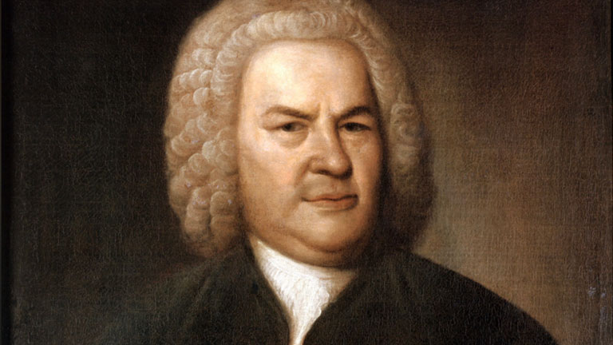

Johann Sebastian Bach: Musical Genius

- 1685: Born to Johann Ambrosius Bach and Maria Elisabeth Lammerhirt in Eisenach, Saxe-Eisenach, Germany
- 1694: Mother and father died
- 1700: enrolled at St. Michael's School in Lüneburg
- November 1706: Married his second cousin, Maria Barbara Bach
- Easter 1707: an early version of Christ lag in Todesbanden, one of his first cantatas, is performed
- 1714: Became Konzertmeister of the ducal court at Weimar
- 1720: His wife died suddenly
- 1721: First performance of The Brandenburg Concertos, considered to be some of the best Baroque compositions
- 1723: Appointed Cantor of St. Thomas School at St. Thomas Church in Leipzig. Here he composed more than 300 cantatas, beginning with Die Elenden sollen essen, BWV 75.
- 1729: Became director of Collegium Musicum,a secular music society.
- 1733: Composed a mass for the Catholic court in Dresden
- 1747: Visited King Frederick II of Prussia in Potsdam, and composed The Musical Offering, based on a theme by Frederick.
- 1748-9: Composed Mass in B Minor, considered to be one of the greatest choral works of all time.
- 1750: Died in Leipzig, Saxony, Germany
"Bach opens a vista to the universe. After experiencing him, people feel there is meaning to life after all." - Helmut Walcha